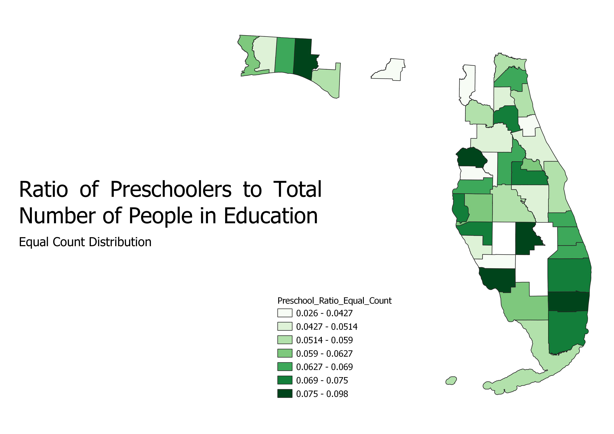

This map portrays the number of preschoolers to the total number of people who are in education in 2019. Data shows that the education of children should start as early as possible, however it is only those who are able to afford preschools who can send their children. That is why, in the map below, you can see that preschool attendance is hight in the cities where the higher income families reside.
The equal count distribution is when each division has the same number of entries. This is great for data that already equally spread out. However, this is not a good distribution for data that is clumped as each division will not properly display the concentrations of certain parts of the data.
This map portrays the ratio between the number of undergraduate students and the total number of people in education in 2019. You can see that the big cities have a relatively small ratio, even though they hold the more bigger colleges. This could be explained by the fact that these cities have such a high population, which in turn has a high number of people in education overall, so that the number of of undergrate students pales in comparison. Compare that to places where there are fewer people: those cities would have high ratio of undergraduates.
The equal interval distribution is when each division has the same amount of range. This type of distribution is great for ratios as each interval can equally represent the wide range of ratios. One negative about this distribution is that it also cannot properly display data where certain parts of the data are clusters, as that clusters could be divided among divisions.
This map portrays the number of women in colleges to the total number of college students per county. There are more women in higher education than men, and this difference can be seen in the ratios. This map is similar to that of the undergraduate students map, as the shades of each county mirror that of the above map. However, one difference is that the shades are a lot darker, indicating how there are more female undergraduates than male undergraduates.
Natural breaks allow the distribution of data to be seen in such a way that every cluster of data could be equally spread out to represent the data in a more even way. One downside is that the process takes a lot longer, as my computer took 5 mins to classify the data while the other two distribution only needed 30 seconds.